Signs: Prohibitory
88 items: ADJUST (Reviewer) 4, Drawn 83, Unverified source 1
 605.3School crossing patrolDrawn
605.3School crossing patrolDrawn 612No right turnDrawn
612No right turnDrawn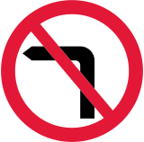
613No left turnDrawn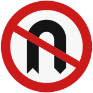
614No U-turnsDrawn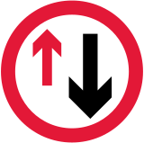
615Give priority to vehicles from opposite directionDrawn 616No entry for vehicular trafficDrawn
616No entry for vehicular trafficDrawn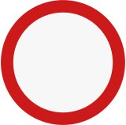
617No vehicles except bicycles being pushedDrawn 618Play streetDrawn
618Play streetDrawn 618.1All vehicles prohibited during the period indicated except for accessDrawn
618.1All vehicles prohibited during the period indicated except for accessDrawn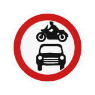
618.2Pedestrian zone (times)Drawn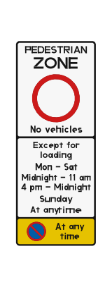
618.3Pedestrian zone (except buses)Drawn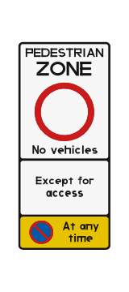
618.3APedestrian zone (except loading)Drawn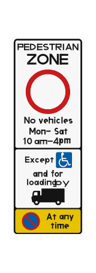
618.3BPedestrian and waiting zoneDrawn 618.3CPedestrian and cycle zoneDrawn
618.3CPedestrian and cycle zoneDrawn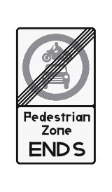
618.4End of pedestrian zoneDrawn 619No motor vehiclesDrawn
619No motor vehiclesDrawn 619.1No motor vehicles except solo motorcyclesDrawn
619.1No motor vehicles except solo motorcyclesDrawn 619.2No solo motorcyclesDrawn
619.2No solo motorcyclesDrawn 622.1ANo goods vehicles over maximum gross weight shownDrawn
622.1ANo goods vehicles over maximum gross weight shownDrawn 622.2End of goods-vehicle prohibitionDrawn
622.2End of goods-vehicle prohibitionDrawn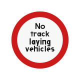
622.4No articulated vehiclesADJUST (Reviewer) 622.5No horse-drawn vehiclesDrawn
622.5No horse-drawn vehiclesDrawn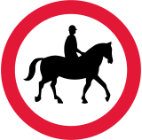
622.6No ridden or accompanied horsesDrawn 622.7No towed caravansDrawn
622.7No towed caravansDrawn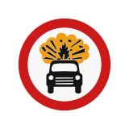
622.8No vehicles carrying explosivesDrawn 622.9Vehicles carrying explosives prohibited (as diagram 622.8)Drawn
622.9Vehicles carrying explosives prohibited (as diagram 622.8)Drawn 625.1No pedestriansDrawn
625.1No pedestriansDrawn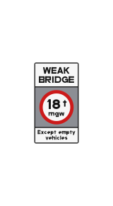
626.2ANo vehicles over maximum gross weight shownDrawn627.1Exemption for unladen vehicles from the prohibition conveyed by the sign in diagram 626.2ADrawn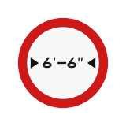
629No vehicles over width shown (pre-2016 number)Drawn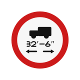
629.1No vehicle or combination of vehicles over length shownDrawn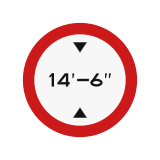
629.2No vehicles over height shown (imperial)Drawn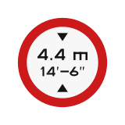
629.2ANo vehicles over height shownDrawn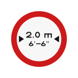
629ANo vehicles over the width shownDrawn 632No overtakingDrawn
632No overtakingDrawn 636Temporary no waiting except loadingDrawn
636Temporary no waiting except loadingDrawn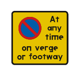
637.1No waiting except as shownDrawn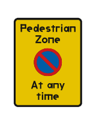
637.2No waiting (times)Drawn 637.3No waiting except loadingDrawn
637.3No waiting except loadingDrawn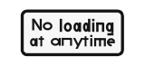
638Continuous prohibition on loading and unloadingADJUST (Reviewer) 638.1No loading during the times shownDrawn
638.1No loading during the times shownDrawn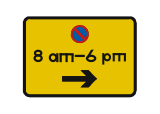
639Waiting limited to the period shownDrawn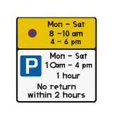
639.1BWaiting prohibited during the periods indicated on the upper panel and restrictions on waiting during the period indicated on the lower panelDrawn 640No stopping during period indicated except for busesDrawn
640No stopping during period indicated except for busesDrawn 640.1No waiting or loading at a parking placeDrawn
640.1No waiting or loading at a parking placeDrawn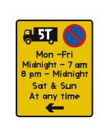
640.2AWaiting by goods vehicles over maximum gross weight shown prohibited during the periods and in the direction indicatedDrawn 640.3Entrance to a designated off-highway loading area in which waiting restrictions applyDrawn
640.3Entrance to a designated off-highway loading area in which waiting restrictions applyDrawn 640.4Waiting prohibited in a designated off-highway loading area during the period indicated except by permitted vehiclesDrawn
640.4Waiting prohibited in a designated off-highway loading area during the period indicated except by permitted vehiclesDrawn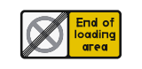
640.5End of designated loading areaDrawn 642No stopping (Clearway)Drawn
642No stopping (Clearway)Drawn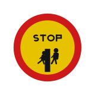
642.2School crossing patrol (pre-2016 number)Drawn 642.3No stopping in lay-by except in emergencyDrawn
642.3No stopping in lay-by except in emergencyDrawn 646Urban clearwayDrawn
646Urban clearwayDrawn 647End of urban clearwayDrawn
647End of urban clearwayDrawn 649.2No stopping except taxis (times)Unverified source
649.2No stopping except taxis (times)Unverified source 650.1Prohibition on stopping by vehicles other than taxis during the period indicatedDrawn
650.1Prohibition on stopping by vehicles other than taxis during the period indicatedDrawn 650.2Prohibition on waiting by vehicles other than taxis during the period indicatedDrawn
650.2Prohibition on waiting by vehicles other than taxis during the period indicatedDrawn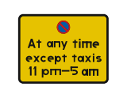
650.3Continuous prohibition on waiting by vehicles with an exemption for taxis during the period indicatedDrawn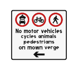
651Mown-verge use prohibitedDrawn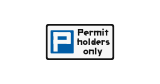
660Parking place reserved for permit holdersDrawn 660.3Parking place reserved for holders of residents' permitsDrawn
660.3Parking place reserved for holders of residents' permitsDrawn 660.4Loading onlyDrawn
660.4Loading onlyDrawn 660.5Parking for the period shownADJUST (Reviewer)
660.5Parking for the period shownADJUST (Reviewer) 660.6Parking place (ticket)Drawn
660.6Parking place (ticket)Drawn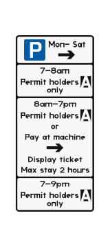
660.7Parking place (voucher)Drawn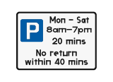
661.1Restrictions on length of waiting time and return periodDrawn 661.2A'Pay and Display' ticket-regulated parking placeDrawn
661.2A'Pay and Display' ticket-regulated parking placeDrawn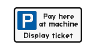
661.3ALocation of 'Pay and Display' ticket machineDrawn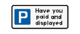
661.4Drivers must obtain and display parking ticketsADJUST (Reviewer)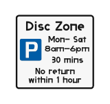
662Period during which waiting is limited and display of a disc is required at a parking place in a disc zoneDrawn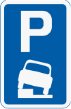
667Parking partly on the verge or footwayDrawn 667.1Parking partly on the verge (times)Drawn
667.1Parking partly on the verge (times)Drawn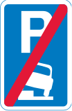
667.2End of verge parking (part)Drawn 668Parking wholly on the verge or footwayDrawn
668Parking wholly on the verge or footwayDrawn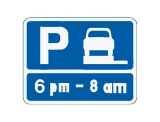
668.1Parking wholly on the verge (times)Drawn 668.2End of verge parking (whole)Drawn
668.2End of verge parking (whole)Drawn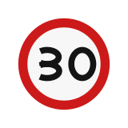
670Maximum speedDrawn 672Minimum speedDrawn
672Minimum speedDrawn 673End of minimum speedDrawn
673End of minimum speedDrawn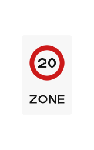
674Entry to 20 mph zoneDrawn 675End of 20 mph zoneDrawn
675End of 20 mph zoneDrawn 675AEnd of 20 mph zone, new limit beginsDrawn
675AEnd of 20 mph zone, new limit beginsDrawn 675BIn relation to England, end of a 20 mph speed limit zone with indication that national speed limits applyDrawn
675BIn relation to England, end of a 20 mph speed limit zone with indication that national speed limits applyDrawn 818.5Low bridge — alternative routeDrawn
818.5Low bridge — alternative routeDrawn 878Area in which cameras are used to enforce traffic regulationsDrawn
878Area in which cameras are used to enforce traffic regulationsDrawn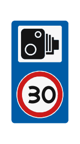
880Speed camera on a lit road with a 30 mph reminderDrawn 951No cyclingDrawn
951No cyclingDrawn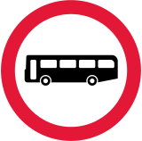
952No buses (over 8 passenger seats)DrawnFaces marked from GOV.UK: traffic sign images © Crown copyright (Department for Transport), Open Government Licence v3.0; converted from the EPS.